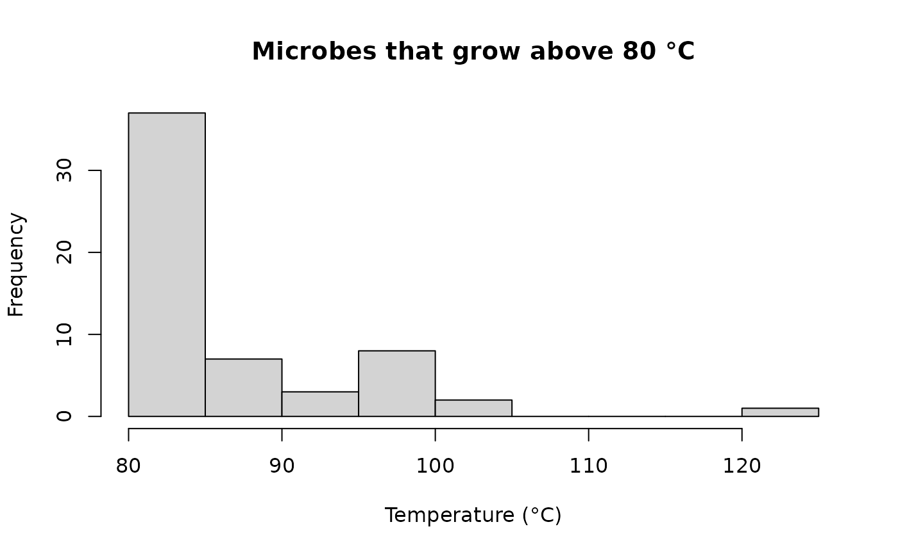

bugphyzz.Rmd
library(bugphyzz)This document shows the main functions and operations that can be used to work with the bugphyzz datasets, such as seeing all physiologies, look at specific physiologies, and make signature sets using your own data!
Bugphyzz can be installed with:
if (!requireNamespace("BiocManager", quietly = TRUE))
install.packages("BiocManager")
BiocManager::install("waldronlab/bugphyzz")The main function for importing datasets is the
physiologies function, which has a single argument,
keyword, and returns a list of data.frames. The
keyword argument accepts a character vector specifying the
name(s) of the dataset(s) that will be imported:
## Import a single dataset
aer <- physiologies("aerophilicity")[[1]]
head(aer)
#> NCBI_ID Genome_ID Accession_ID Taxon_name Attribute
#> 1 6 NA <NA> Azorhizobium microaerophilic
#> 2 10 NA <NA> Cellvibrio aerobic
#> 3 16 NA <NA> Methylophilus aerobic
#> 4 18 NA <NA> Pelobacter anaerobic
#> 5 20 NA <NA> Phenylobacterium aerobic
#> 6 22 NA <NA> Shewanella facultatively anaerobic
#> Attribute_value
#> 1 TRUE
#> 2 TRUE
#> 3 TRUE
#> 4 TRUE
#> 5 TRUE
#> 6 TRUE
#> Attribute_source
#> 1 Garrity, G.M., Winters, M. & Searles, D.B. 2001a. Taxonomic Outline of the Procaryotic Genera. Bergey's Manual of Systematic Bacteriology, Second Edition. Release 1.0, Apr 2001: 1-39.
#> 2 Garrity, G.M., Winters, M. & Searles, D.B. 2001a. Taxonomic Outline of the Procaryotic Genera. Bergey's Manual of Systematic Bacteriology, Second Edition. Release 1.0, Apr 2001: 1-39.
#> 3 Garrity, G.M., Winters, M. & Searles, D.B. 2001a. Taxonomic Outline of the Procaryotic Genera. Bergey's Manual of Systematic Bacteriology, Second Edition. Release 1.0, Apr 2001: 1-39.
#> 4 Garrity, G.M., Winters, M. & Searles, D.B. 2001a. Taxonomic Outline of the Procaryotic Genera. Bergey's Manual of Systematic Bacteriology, Second Edition. Release 1.0, Apr 2001: 1-39.
#> 5 Garrity, G.M., Winters, M. & Searles, D.B. 2001a. Taxonomic Outline of the Procaryotic Genera. Bergey's Manual of Systematic Bacteriology, Second Edition. Release 1.0, Apr 2001: 1-39.
#> 6 Garrity, G.M., Winters, M. & Searles, D.B. 2001a. Taxonomic Outline of the Procaryotic Genera. Bergey's Manual of Systematic Bacteriology, Second Edition. Release 1.0, Apr 2001: 1-39.
#> Evidence Confidence_interval Note Rank Parent_name Parent_NCBI_ID
#> 1 EXP always NA genus Xanthobacteraceae 335928
#> 2 EXP always NA genus Cellvibrionaceae 1706371
#> 3 EXP always NA genus Methylophilaceae 32011
#> 4 EXP always NA genus Desulfuromonadaceae 213421
#> 5 EXP always NA genus Caulobacteraceae 76892
#> 6 EXP always NA genus Shewanellaceae 267890
#> Parent_rank
#> 1 family
#> 2 family
#> 3 family
#> 4 family
#> 5 family
#> 6 familyYou can use the keyword = "all" to import all of the
datasets:
## Import all of the datasets available through the physiologies function
phys <- physiologies(keyword = "all")
str(phys, max.level = 1)
#> List of 27
#> $ acetate producing :'data.frame': 24 obs. of 14 variables:
#> $ aerophilicity :'data.frame': 2557 obs. of 14 variables:
#> $ animal pathogen :'data.frame': 1420 obs. of 13 variables:
#> $ antimicrobial resistance :'data.frame': 10321 obs. of 13 variables:
#> $ antimicrobial sensitivity :'data.frame': 832 obs. of 13 variables:
#> $ arrangement :'data.frame': 1823 obs. of 13 variables:
#> $ biofilm forming :'data.frame': 426 obs. of 14 variables:
#> $ butyrate producing :'data.frame': 24 obs. of 14 variables:
#> $ COGEM pathogenicity rating :'data.frame': 1043 obs. of 13 variables:
#> $ disease association :'data.frame': 445 obs. of 13 variables:
#> $ extreme environment :'data.frame': 1875 obs. of 13 variables:
#> $ gram stain :'data.frame': 4967 obs. of 13 variables:
#> $ growth medium :'data.frame': 304 obs. of 14 variables:
#> $ growth temperature :'data.frame': 2524 obs. of 13 variables:
#> $ habitat :'data.frame': 18230 obs. of 14 variables:
#> $ health associated :'data.frame': 30 obs. of 13 variables:
#> $ hydrogen gas producing :'data.frame': 24 obs. of 15 variables:
#> $ isolation site :'data.frame': 1176 obs. of 13 variables:
#> $ lactate producing :'data.frame': 24 obs. of 14 variables:
#> $ length :'data.frame': 863 obs. of 13 variables:
#> $ mutation rate per site per generation:'data.frame': 26 obs. of 14 variables:
#> $ mutation rates per site per year :'data.frame': 81 obs. of 14 variables:
#> $ optimal ph :'data.frame': 886 obs. of 13 variables:
#> $ plant pathogenicity :'data.frame': 1493 obs. of 13 variables:
#> $ shape :'data.frame': 3129 obs. of 14 variables:
#> $ spore shape :'data.frame': 1535 obs. of 13 variables:
#> $ width :'data.frame': 863 obs. of 13 variables:The physiologiesList function can be used to display
which datasets are available through the physiologies
function before importing them:
physiologiesList()
#> [1] "acetate producing"
#> [2] "aerophilicity"
#> [3] "animal pathogen"
#> [4] "antimicrobial resistance"
#> [5] "antimicrobial sensitivity"
#> [6] "arrangement"
#> [7] "biofilm forming"
#> [8] "butyrate producing"
#> [9] "COGEM pathogenicity rating"
#> [10] "disease association"
#> [11] "extreme environment"
#> [12] "gram stain"
#> [13] "growth medium"
#> [14] "growth temperature"
#> [15] "habitat"
#> [16] "health associated"
#> [17] "hydrogen gas producing"
#> [18] "isolation site"
#> [19] "lactate producing"
#> [20] "length"
#> [21] "mutation rate per site per generation"
#> [22] "mutation rates per site per year"
#> [23] "optimal ph"
#> [24] "plant pathogenicity"
#> [25] "shape"
#> [26] "spore shape"
#> [27] "width"A separate function is provided to import the fatty acid compositions
dataset, fattyAcidComposition. This function takes no
arguments and returns a single data.frame object:
fac <- fattyAcidComposition()
head(fac)
#> NCBI_ID Genome_ID Accession_ID Taxon_name Attribute
#> 1 562 NA NA Escherichia coli Fatty Acid Composition
#> 2 562 NA NA Escherichia coli Fatty Acid Composition
#> 3 562 NA NA Escherichia coli Fatty Acid Composition
#> 4 562 NA NA Escherichia coli Fatty Acid Composition
#> 5 562 NA NA Escherichia coli Fatty Acid Composition
#> 6 562 NA NA Escherichia coli Fatty Acid Composition
#> Attribute_source Evidence Confidence_interval Attribute_new
#> 1 Microbial Fatty Acid Compositions EXP Unknown Br-C10:1
#> 2 Microbial Fatty Acid Compositions EXP Unknown Br-C11:1
#> 3 Microbial Fatty Acid Compositions EXP Unknown Br-C12:1
#> 4 Microbial Fatty Acid Compositions EXP Unknown Br-C13:1
#> 5 Microbial Fatty Acid Compositions EXP Unknown Br-C13:0
#> 6 Microbial Fatty Acid Compositions EXP Unknown Br-C14:1
#> Attribute_value Rank Parent_name Parent_NCBI_ID Parent_rank
#> 1 0 species Escherichia 561 genus
#> 2 0 species Escherichia 561 genus
#> 3 0 species Escherichia 561 genus
#> 4 0 species Escherichia 561 genus
#> 5 0 species Escherichia 561 genus
#> 6 0 species Escherichia 561 genusBugphyzz provides the makeSignatures function to create
a list of microbial signatures from a bugphyzz dataset.
aer_sig <- makeSignatures(
aer, tax_id_type = "Taxon_name", tax_level = "genus", evidence = "EXP",
ci = 1, min_size = 10
)
lapply(aer_sig, head)
#> $aerobic
#> [1] "Cellvibrio" "Methylophilus" "Phenylobacterium" "Vitreoscilla "
#> [5] "Lysobacter" "Simonsiella"
#>
#> $anaerobic
#> [1] "Pelobacter" "Gallionella" "Treponema" "Xanthobacter"
#> [5] "Photobacterium" "Bacteroides"
#>
#> $`facultatively anaerobic`
#> [1] "Shewanella " "Eikenella " "Zymomonas " "Citrobacter" "Enterobacter"
#> [6] "Erwinia "
#>
#> $microaerophilic
#> [1] "Azorhizobium" "Azospirillum" "Herbaspirillum" "Azoarcus "
#> [5] "Magnetospirillum" "Sutterella "
#>
#> $`obligately aerobic`
#> [1] "Ancylobacter" "Pirellula" "Leptospirillum" "Achromobacter "
#> [5] "Flavobacterium " "Xanthomonas"
#>
#> $`obligately anaerobic`
#> [1] "Fibrobacter" "Porphyromonas" "Fusobacterium" "Pectinatus"
#> [5] "Ruminobacter" "Desulfovibrio"In some cases, some filtering might be necessary before creating the signatures. For example, let’s create a signature of microbes that grow above 80°C.
First, we must import the “growth temperature” dataset.
gt <- physiologies("growth temperature")[[1]]
head(gt)
#> Taxon_name NCBI_ID Genome_ID
#> 1 Acholeplasma laidlawii PG-8A 441768 Unknown
#> 2 Acidilobus saccharovorans 345-15 666510 Unknown
#> 3 Acidiphilium cryptum JF-5 349163 Unknown
#> 4 Acidithiobacillus ferrooxidans ATCC 23270 243159 Unknown
#> 5 Acidobacterium capsulatum ATCC 51196 240015 Unknown
#> 6 Acidothermus cellulolyticus 11B 351607 Unknown
#> Accession_ID
#> 1 NC_010163
#> 2 NC_014374
#> 3 NC_009467, NC_009468, NC_009469, NC_009470, NC_009471, NC_009472, NC_009473, NC_009474, NC_009484
#> 4 NC_011761
#> 5 NC_012483
#> 6 NC_008578
#> Attribute Attribute_value Attribute_source Evidence
#> 1 growth temperature 37 http://bacmap.wishartlab.com/ EXP
#> 2 growth temperature 80 http://bacmap.wishartlab.com/ EXP
#> 3 growth temperature 35 http://bacmap.wishartlab.com/ EXP
#> 4 growth temperature 30 http://bacmap.wishartlab.com/ EXP
#> 5 growth temperature 30 http://bacmap.wishartlab.com/ EXP
#> 6 growth temperature 58 http://bacmap.wishartlab.com/ EXP
#> Confidence_interval Rank Parent_name Parent_NCBI_ID
#> 1 Unknown strain Acholeplasma laidlawii 2148
#> 2 Unknown strain Acidilobus saccharovorans 242703
#> 3 Unknown strain Acidiphilium cryptum 524
#> 4 Unknown strain Acidithiobacillus ferrooxidans 920
#> 5 Unknown strain Acidobacterium capsulatum 33075
#> 6 Unknown strain Acidothermus cellulolyticus 28049
#> Parent_rank
#> 1 species
#> 2 species
#> 3 species
#> 4 species
#> 5 species
#> 6 speciesNow, we filter only those taxa that grow above 80°C with regular R functions:
gt_subset <- gt[gt$Attribute_value >= 80, ]
hist(
x = gt_subset$Attribute_value, xlab = "Temperature (°C)",
main = "Microbes that grow above 80 °C"
)
Finally, we can create the microbial signatures from the filtered dataset. In his case, a signature of species using only the taxids.
gt_subset_sig <- makeSignatures(
gt_subset, tax_id_type = "NCBI_ID", tax_level = "species",
evidence = c("Unknown", "EXP", "ASR"), ci = 0.4, include_unknown_ci = TRUE
)
head(gt_subset_sig)
#> $`growth temperature`
#> [1] 644281 2714 1394 1395 2336 33934 63363 28095 498846
#> [10] 67760 667126 73913 2320 2180 29292 1008460 1295609 2269
#> [19] 1200300 93930 93929 37636Session information:
sessionInfo()
#> R Under development (unstable) (2022-03-14 r81896)
#> Platform: x86_64-pc-linux-gnu (64-bit)
#> Running under: Ubuntu 20.04.4 LTS
#>
#> Matrix products: default
#> BLAS/LAPACK: /usr/lib/x86_64-linux-gnu/openblas-pthread/libopenblasp-r0.3.8.so
#>
#> locale:
#> [1] LC_CTYPE=en_US.UTF-8 LC_NUMERIC=C
#> [3] LC_TIME=en_US.UTF-8 LC_COLLATE=en_US.UTF-8
#> [5] LC_MONETARY=en_US.UTF-8 LC_MESSAGES=en_US.UTF-8
#> [7] LC_PAPER=en_US.UTF-8 LC_NAME=C
#> [9] LC_ADDRESS=C LC_TELEPHONE=C
#> [11] LC_MEASUREMENT=en_US.UTF-8 LC_IDENTIFICATION=C
#>
#> attached base packages:
#> [1] stats graphics grDevices utils datasets methods base
#>
#> other attached packages:
#> [1] bugphyzz_0.0.1.3
#>
#> loaded via a namespace (and not attached):
#> [1] Rcpp_1.0.8.3 ape_5.6-2 lattice_0.20-45 tidyr_1.2.0
#> [5] zoo_1.8-10 assertthat_0.2.1 rprojroot_2.0.3 digest_0.6.29
#> [9] foreach_1.5.2 utf8_1.2.2 R6_2.5.1 plyr_1.8.7
#> [13] RSQLite_2.2.12 evaluate_0.15 highr_0.9 pillar_1.7.0
#> [17] rlang_1.0.2 curl_4.3.2 uuid_1.1-0 data.table_1.14.2
#> [21] taxize_0.9.100 blob_1.2.3 jquerylib_0.1.4 rmarkdown_2.13
#> [25] pkgdown_2.0.3 textshaping_0.3.6 desc_1.4.1 stringr_1.4.0
#> [29] bit_4.0.4 compiler_4.2.0 xfun_0.30 pkgconfig_2.0.3
#> [33] systemfonts_1.0.4 conditionz_0.1.0 htmltools_0.5.2 tidyselect_1.1.2
#> [37] tibble_3.1.6 httpcode_0.3.0 mgsub_1.7.3 codetools_0.2-18
#> [41] reshape_0.8.9 fansi_1.0.3 hoardr_0.5.2 dbplyr_2.1.1
#> [45] crayon_1.5.1 dplyr_1.0.8 rappdirs_0.3.3 crul_1.2.0
#> [49] grid_4.2.0 nlme_3.1-155 jsonlite_1.8.0 lifecycle_1.0.1
#> [53] DBI_1.1.2 magrittr_2.0.3 taxizedb_0.3.0 cli_3.2.0
#> [57] stringi_1.7.6 cachem_1.0.6 fs_1.5.2 xml2_1.3.3
#> [61] bslib_0.3.1 ellipsis_0.3.2 ragg_1.2.2 generics_0.1.2
#> [65] vctrs_0.4.1 iterators_1.0.14 tools_4.2.0 bit64_4.0.5
#> [69] bold_1.2.0 glue_1.6.2 purrr_0.3.4 parallel_4.2.0
#> [73] fastmap_1.1.0 yaml_2.3.5 memoise_2.0.1 knitr_1.38
#> [77] sass_0.4.1